PHENOVOXEL ARCHIVE · v0.6.71 · 4 NOVEMBER 2026
Fish, with individual skins and movement.
All four existing archive fish reviewed. Four photographic-textured species added: Ayukake, flathead grey mullet, yellowfin goby and Japanese rice fish. Zebrafish and clownfish surfaces refined; the detailed white shark and requested DigitalLife whale shark retained. The archive now contains 341 species.
Explore the new Ayukake ↗Licenses and creditsFull review dataProvenance and preservation
Choose Swim or the named swimming study to start playback, including after a paused inspection. Pause and seek to compare poses. Dimensions are normalized; display seconds are not a physiological clock. The source open-mouth sculpin pose is not a feeding mechanism.
What the science supports
The species use different locomotion studies: short benthic relocation for sculpin and goby, posterior undulation for mullet, retained creator undulation for medaka and both sharks, beat-and-coast for zebrafish, and combined pectoral/caudal use for clownfish. The medaka comparison source is a research preprint. The mullet study concerns captive juveniles; its indexed description supports the movement class, while the full article timed out. Comparative sculpin support literature does not calibrate Ayukake joints. See each fish’s cited sources below.
These are external, species-informed educational studies. Joint placement, beat frequency, bout duty cycle, turn angles and material optics remain authored or creator interpretations. No measured live-animal trajectories, calibrated speeds, hydrodynamic forces, substrate contact, filtration, prey capture, gas exchange, reproductive mechanism or complete physiology is solved. There is no independent scientific certification or accuracy percentage.
The Ayukake is one species under the current Catalog of Fishes name Rheopresbe kazika; its source and GBIF occurrence key retain the older Cottus kazika combination. It is not counted twice. Photographic skins represent particular source individuals, lighting and preservation/capture conditions; they are not universal color standards.
Verification and preservation
Six new self-contained exports pass the official Khronos glTF validator with zero errors and zero warnings. Browser checks cover model readiness, active playback after pause and changing rendered frames for all eight fish. Software checks cover strict release reversal, source payload preservation, normalized skin weights, stable heads, attached fins, held benthic poses and zebrafish coasts. These checks verify software behavior, not biological accuracy.
Two existing records revised, four added, and the other 335 records retained. All 37 registered original model payloads and historical revisions remain unchanged, including the penguin and eagle work. Reversible record ledger · Rebuild recipe.
ADDED
Rheopresbe kazika
Ayukake (fourspine sculpin)
Added the requested CC0 Ayukake surface, retaining its photographic texture, broad head, open-mouth source pose and spread pectoral fins. Added a shared axial rig. The open mouth is a retained source pose, not a feeding simulation.
Movement study
A short authored posterior body/tail burst with the broad head and spread pectorals comparatively stable, followed by a held rest. Represents brief benthic relocation; substrate contact forces, burst speed and latency are not solved.
Qualitative exterior and locomotion illustration. No measured animal dimensions, fitted tailbeat rate, hydrodynamic propulsion, feeding, physiological gas exchange or independent scientific validation.
Open the interactive fish ↗Download GLB with creator/authored clipsOriginal model sourceCC0
Eight anatomical and motion review views
side · opposite · front · top · underside · swim · late · turn
These are actual offline renders of the same geometry and motion with simplified lighting; the larger figures above are browser WebGL2 captures. They are reconstructions, not organism photographs.
Research: Kochi Prefecture Red Data Book · Ayukake · Eschmeyer’s Catalog of Fishes · Rheopresbe kazika · Taft et al. · sculpin pectoral fin functions review
File SHA-256: c61c9ee6270208045f3364b6015e969a94c3b16c5e52a8f35e7974ecc927b70b
ADDED
Mugil cephalus
Flathead grey mullet
Added the CC0 mullet surface with its original scaled texture, forked tail and separated dorsal fins. One shared skeleton deforms both source mesh panels.
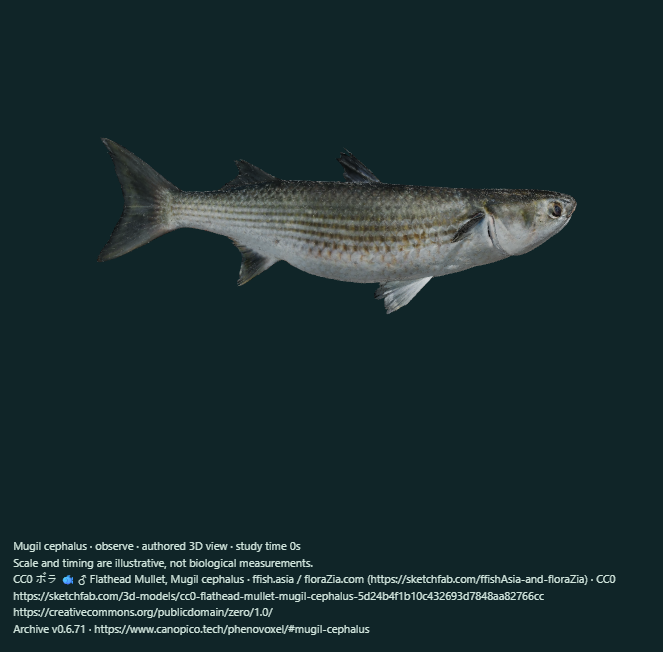
Actual browser rendering · exterior. ffish.asia / floraZia.com (https://sketchfab.com/ffishAsia-and-floraZia) · CC0.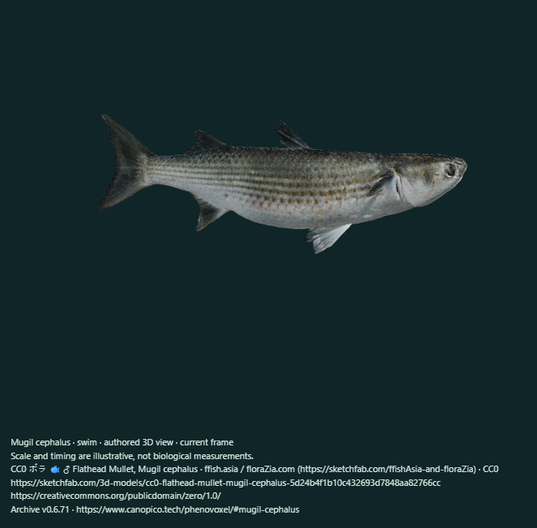
Actual automatic playback frame, captured at 0.25× display speed. Same source and model license; authored or creator timing. Next automatic frame.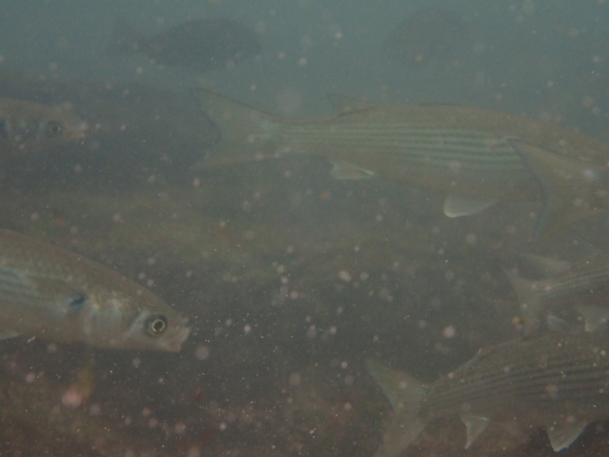
Real organism photograph · Thompson Hyggen · no rights reserved · CC0. Source identification is not independent verification of the mesh.Movement study
Posterior subcarangiform lateral undulation on the retained textured surface. Pectoral fins remain in the source pose. Frequency, amplitude and swimming speed are not fitted to the captive juvenile study.
Qualitative exterior and locomotion illustration. No measured animal dimensions, fitted tailbeat rate, hydrodynamic propulsion, feeding, physiological gas exchange or independent scientific validation.
Open the interactive fish ↗Download GLB with creator/authored clipsOriginal model sourceCC0
Eight anatomical and motion review views
side · opposite · front · top · underside · swim · late · turn
These are actual offline renders of the same geometry and motion with simplified lighting; the larger figures above are browser WebGL2 captures. They are reconstructions, not organism photographs.
Research: Animal Diversity Web · Mugil cephalus · CSIC · juvenile flathead grey mullet behavior under rearing conditions
File SHA-256: a47634f0e1f2a99a8f0bb585ffd9580abd06ef6a2881d168846d28874298e1df
ADDED
Acanthogobius flavimanus
Yellowfin goby
Added the CC0 yellowfin goby with its original mottling and fin texture. Short movement settles into the same held benthic pose.
Movement study
A short authored tail-driven relocation study, followed by a held benthic pose. The head remains comparatively stable; no prey strike or pelvic suction mechanism is implemented.
Qualitative exterior and locomotion illustration. No measured animal dimensions, fitted tailbeat rate, hydrodynamic propulsion, feeding, physiological gas exchange or independent scientific validation.
Open the interactive fish ↗Download GLB with creator/authored clipsOriginal model sourceCC0
Eight anatomical and motion review views
side · opposite · front · top · underside · swim · late · turn
These are actual offline renders of the same geometry and motion with simplified lighting; the larger figures above are browser WebGL2 captures. They are reconstructions, not organism photographs.
Research: Smithsonian NEMESIS · yellowfin goby · USGS · yellowfin goby species profile
File SHA-256: 4f3d69c37f947ee352442928b514db8849e166f0bc59facf5c79aa5f90be55a1
ADDED
Oryzias latipes
Japanese rice fish (medaka)
Added the CC0 female medaka source. Original geometry, photographic map, skeleton and creator animation remain together. Material metalness is zero; the skinned mesh is at the scene root for portable playback.
Movement study
The source creator Animation clip drives the retained skin and skeleton. Continuous undulation is qualitatively consistent with the cited medaka preprint; its timing and fin motions remain an artist reconstruction.
Qualitative exterior and locomotion illustration. No measured animal dimensions, fitted tailbeat rate, hydrodynamic propulsion, feeding, physiological gas exchange or independent scientific validation.
Open the interactive fish ↗Download GLB with creator/authored clipsOriginal model sourceCC0
Eight anatomical and motion review views
side · opposite · front · top · underside · swim · late · turn
These are actual offline renders of the same geometry and motion with simplified lighting; the larger figures above are browser WebGL2 captures. They are reconstructions, not organism photographs.
Research: Harpaz et al. (2025) · medaka kinematic states
File SHA-256: be98e45a39fbac76a05f710f3f19f0a9d73db05d1f12a49486c5986d8941a0df
REFINED
Danio rerio
Zebrafish
Rebuilt the original smooth body and attached fin membranes. The archive’s licensed Ffish.asia photograph is retained unchanged and projected through UVs onto the body and unpaired fins. Both sides use the same photographed flank; the opposite pattern is mirrored. Proportions, barbels, fin mechanics, optical approximation and angles remain authored. Family updated to Danionidae with the older GBIF family retained for comparison.
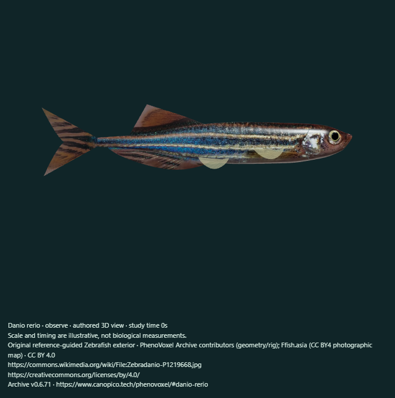
Actual browser rendering · exterior. PhenoVoxel Archive contributors (geometry/rig); Ffish.asia (CC BY4 photographic map) · CC BY 4.0.Actual automatic playback frame, captured at 0.25× display speed. Same source and model license; authored or creator timing. Next automatic frame.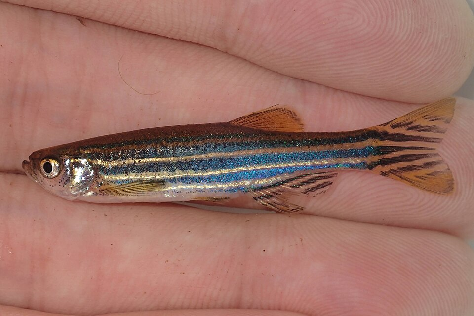
Real organism photograph · Ffish.asia · CC BY 4.0. Source identification is not independent verification of the mesh.Movement study
Authored bouts of lateral body/tail undulation separated by quiet coasts, with attached paired fins. Illustrates burst-and-coast locomotion; duty cycle, beat frequency, speed and angles are uncalibrated.
Qualitative exterior and locomotion illustration. No measured animal dimensions, fitted tailbeat rate, hydrodynamic propulsion, feeding, physiological gas exchange or independent scientific validation.
Open the interactive fish ↗Download GLB with creator/authored clipsOriginal model sourceCC BY 4.0
Eight anatomical and motion review views
side · opposite · front · top · underside · swim · late · turn
These are actual offline renders of the same geometry and motion with simplified lighting; the larger figures above are browser WebGL2 captures. They are reconstructions, not organism photographs.
Research: University of Michigan · Animal Diversity Web · Eschmeyer Catalog of Fishes · Danio rerio · Zebrafish swimming in the flow: a particle image velocimetry study (2017) · Gur et al.2020 · iridophore crystallotypes in zebrafish · Harpaz et al.2025 · medaka contrasted with zebrafish swimming
File SHA-256: e2981381c9b1f0868a65fdd1101a099b05ee83a07c14004668dc25bc2af724db
REFINED
Amphiprion ocellaris
Common clownfish
Kept Bindestrek’s finer textured surface instead of the rejected simplified test body. Revised dielectric materials and a shared nine-joint axial/pectoral skin retain the source outline and body atlas. A constant translucent fin image is folded into its equivalent material factor.
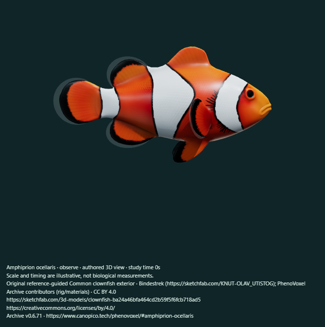
Actual browser rendering · exterior. Bindestrek (https://sketchfab.com/KNUT-OLAV_UTISTOG); PhenoVoxel Archive contributors (rig/materials) · CC BY 4.0.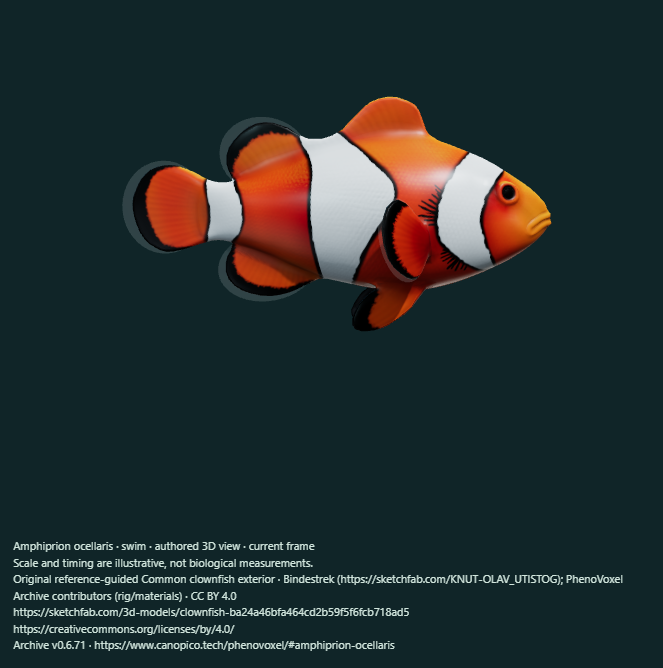
Actual automatic playback frame, captured at 0.25× display speed. Same source and model license; authored or creator timing. Next automatic frame.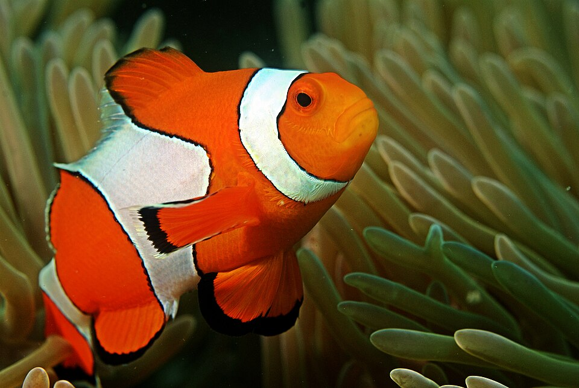
Real organism photograph · Ritiks · CC BY-SA 3.0. Source identification is not independent verification of the mesh.Movement study
Retained artist texture and source silhouette with authored paired pectoral strokes and posterior lateral undulation. Playback frequency, angles and forces are not measured.
Qualitative exterior and locomotion illustration. No measured animal dimensions, fitted tailbeat rate, hydrodynamic propulsion, feeding, physiological gas exchange or independent scientific validation.
Open the interactive fish ↗Download GLB with creator/authored clipsOriginal model sourceCC BY 4.0
Eight anatomical and motion review views
side · opposite · front · top · underside · swim · late · turn
These are actual offline renders of the same geometry and motion with simplified lighting; the larger figures above are browser WebGL2 captures. They are reconstructions, not organism photographs.
Research: University of Michigan · Animal Diversity Web · Marcoux & Korsmeyer (2019) · Coral-reef fish swimming in simulated wave surge
File SHA-256: 85f4c11644eec371e220426d9d3a72eed8ea6580b6df01314774b388ec5ab11d
RETAINED AND REVIEWED
Carcharodon carcharias
White shark
Retained the detailed LasquetiSpice surface, textures, source skeleton and Swimming clip. Reviewed all sides and active playback; applied the same restrained marine studio lighting and removed the decorative ground beneath the swimming specimen. Creator Circling and Biting remain archived artist clips, not validated hunting or feeding studies.
Actual browser rendering · exterior. LasquetiSpice (https://sketchfab.com/LasquetiSpice) · CC BY 4.0.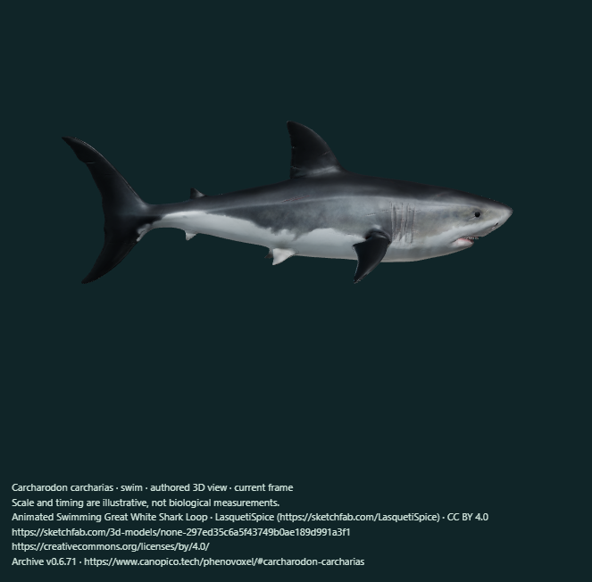
Actual automatic playback frame, captured at 0.25× display speed. Same source and model license; authored or creator timing. Next automatic frame.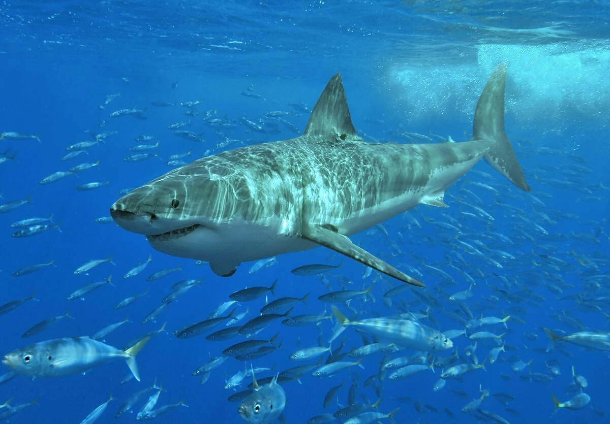
Real organism photograph · Terry Goss · CC BY 2.5. Source identification is not independent verification of the mesh. Movement study
The original creator Swimming clip drives the retained skeleton, skin weights and textures. It uses lateral body/tail movement. Creator Circling and Biting clips are archived but are not exposed as scientifically validated hunting or escape behaviors; no prey capture or fluid calculation is implemented.
Artist interpretation; species identity, surface and unmeasured motion reviewed against cited sources but not independently validated.
Open the interactive fish ↗Download GLB with creator/authored clipsOriginal model sourceCC BY 4.0
Eight anatomical and motion review views
side · opposite · front · top · underside · swim · late · oblique
These are actual offline renders of the same geometry and motion with simplified lighting; the larger figures above are browser WebGL2 captures. They are reconstructions, not organism photographs.
Research: Smithsonian Tropical Research Institute white-shark species account · Variability in the burst behaviour of the white shark (2025)
File SHA-256: 9da89597ba6e39862062ac4ed6290d733609b724a95c68fb4defb5fe91f2524f
RETAINED AND REVIEWED
Rhincodon typus
Whale shark
Retained the requested DigitalLife Model99A body, revised v0.6.66 skin and source Swim Cycle. Reviewed all sides and playback. Corrected current-model credits in the study capture and research panel; the historical CanYuTsai source remains unchanged.
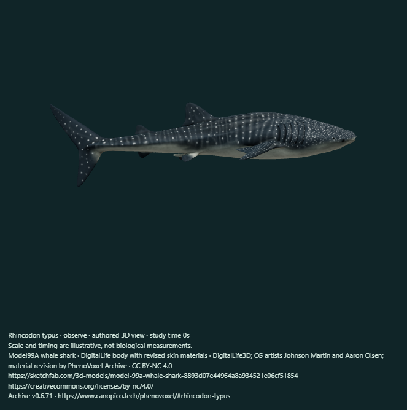
Actual browser rendering · exterior. DigitalLife3D; CG artists Johnson Martin and Aaron Olsen; material revision by PhenoVoxel Archive · CC BY-NC 4.0.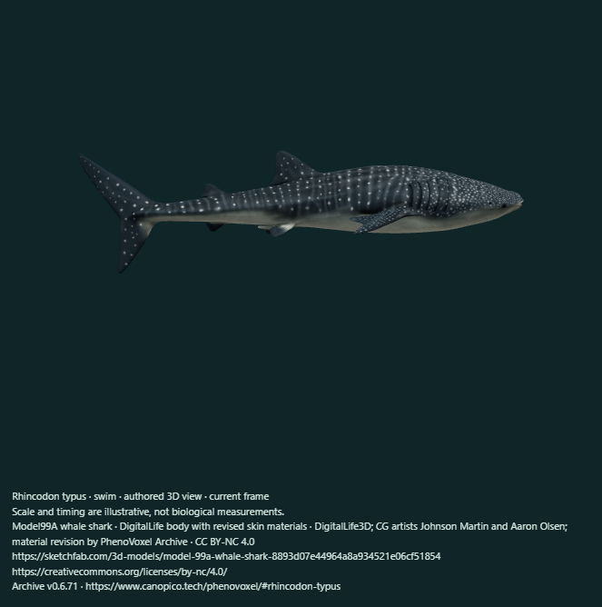
Actual automatic playback frame, captured at 0.25× display speed. Same source and model license; authored or creator timing. Next automatic frame.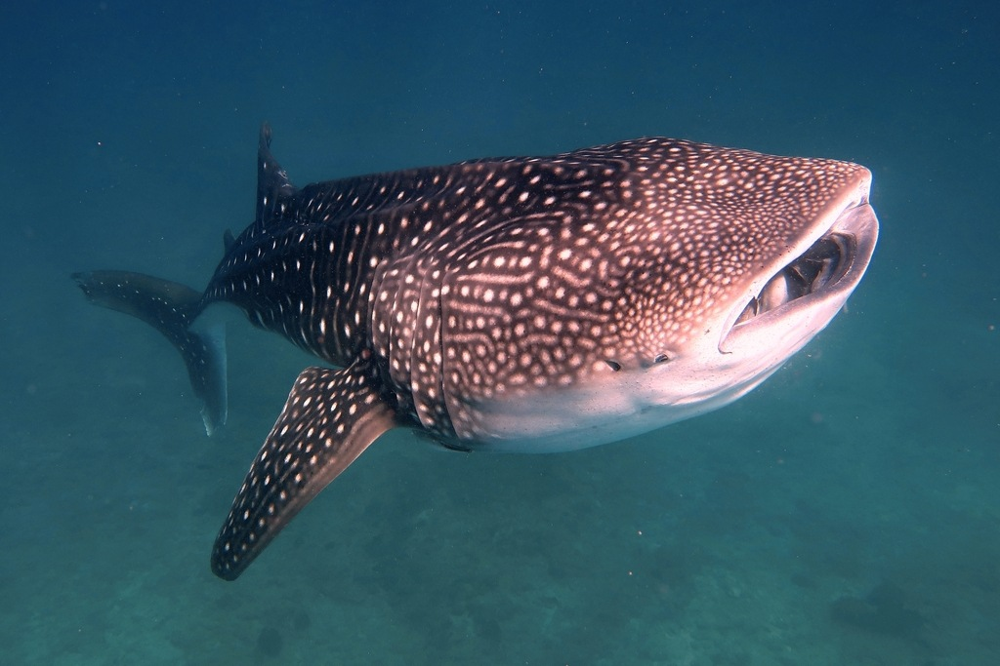
Real organism photograph · Daniel Benák · CC BY 4.0. Source identification is not independent verification of the mesh.Movement study
The requested DigitalLife body and original Swim Cycle are retained together. The source skeleton produces lateral body and caudal movement, with the artist fin poses. Native clip playback is a creator reconstruction, not a measured live-animal tailbeat rate, speed, force solution or physiological clock.
DigitalLife identifies the source as subadult male TZ209, Mosi, reconstructed from footage near Mafia Island, Tanzania in November2022. The model is a source reconstruction, not an independently certified scan or a complete physiological simulation.
Open the interactive fish ↗Download GLB with creator/authored clipsOriginal model sourceCC BY-NC 4.0
Eight anatomical and motion review views
side · opposite · front · top · underside · swim · late · oblique
These are actual offline renders of the same geometry and motion with simplified lighting; the larger figures above are browser WebGL2 captures. They are reconstructions, not organism photographs.
Research: Florida Museum whale-shark account · Gleiss et al. (2011): convergent evolution in locomotory patterns of flying and swimming animals
File SHA-256: c7a2a6a742fd7d33f0dde9d8575ad043a8bc14ef57d9a03bb5e73084e91a3674
Every figure above is labeled as a real organism photograph or an actual model rendering. Original creators and licenses remain attached to the assets; the whale shark remains noncommercial. No paid model purchases or external generation credits were used.